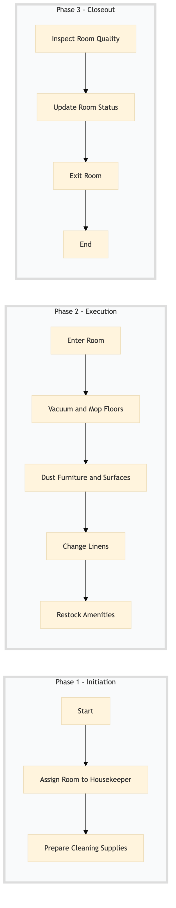

| Role | Steps |
|---|---|
| Housekeeping Supervisor | 1.1 |
| Housekeeper | 1.2 2.1 2.2 2.3 2.4 2.5 3.1 3.2 3.3 |
| Step | Name | Role | System | Input | Output | KPI | Dec? | Exc? | Pain Point / Risk |
|---|---|---|---|---|---|---|---|---|---|
| 1.1 | Assign Room to Housekeeper | Housekeeping Supervisor | Oracle OPERA Cloud | Check-out confirmation | Room assignment list | < 3 min | N | Y | Overcrowded schedule affecting room turnaround time |
| 1.2 | Prepare Cleaning Supplies | Housekeeper | Birchstreet Procurement | Room assignment list | Supplies checklist | < 5 min | N | Y | Stockouts of essential cleaning supplies |
| 2.1 | Enter Room | Housekeeper | Oracle OPERA Cloud | Room assignment list | Room status update | < 1 min | N | Y | Locked rooms or incorrect room assignments |
| 2.2 | Vacuum and Mop Floors | Housekeeper | None | Supplies checklist | Cleaned floor | < 10 min | N | Y | Difficult-to-clean flooring materials |
| 2.3 | Dust Furniture and Surfaces | Housekeeper | None | Supplies checklist | Clean furniture and surfaces | < 15 min | N | Y | Heavy dust accumulation |
| 2.4 | Change Linens | Housekeeper | None | Supplies checklist | Changed linens | < 5 min | N | Y | Limited linen supply |
| 2.5 | Restock Amenities | Housekeeper | None | Supplies checklist | Restocked amenities | < 10 min | N | Y | Amenity stockouts |
| 3.1 | Inspect Room Quality | Housekeeper | Oracle OPERA Cloud | Cleaned room | Room inspection report | < 5 min | Y | N | Inconsistent cleaning standards |
| 3.2 | Update Room Status | Housekeeper | Oracle OPERA Cloud | Room inspection report | Updated room status in PMS | < 1 min | N | Y | System downtime affecting updates |
| 3.3 | Exit Room | Housekeeper | Oracle OPERA Cloud | Updated room status | Room ready for occupancy | < 1 min | N | Y | Security concerns with unauthorized access |
Daily room cleaning procedure at a Marriott full-service hotel ensuring guest satisfaction and maintaining high standards of cleanliness.